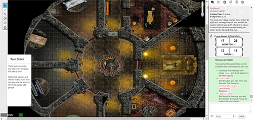

Comparative Analysis Project Research
Roll 20
Screenshot of Roll20 game
Roll 20 is an online RPG game tool for people playing tabletop games in remote locations. It has a map area that the Game Master (GM) can create and reveal to players as they discover new areas. It also has a chat box for players to interact and roll dice, as well as resources for players to make character sheets and access stats for various game components.
Overall the site is very functional and has many of the tools a user would want in an online RPG game tool, but the ease of use and interactivity of these tools is subpar. It allows people who have games remotely be able to see the map, talk and interact with each other, and have all of the tools needed to play their game in one place. Being able to roll checks directly from your character sheet is a super handy feature. The character sheets have lots of settings and customizable options but it can be difficult to find the specific setting you want to change for the many custom changes needed for RPG characters. Oftentimes I feel like I don’t have enough screen space to see enough of the map, and my character sheet, and the chat where rolls are being done all at the same time, which I need to look at frequently throughout the game. The user icons along the bottom of the screen don’t help with this.
The visual design leaves something to be desired; many features are basic text and boxes, and the map assets and creation options for GMs are not amazing. The map assets can be pulled from anywhere online, but since they are regular images they don’t scale well and maps and assets don’t have a cohesive look to them. This makes the overall design look haphazard and unpolished. Many of the tools to interact with the map are not optimal either. Players and the GM need to quickly draw basic shapes, indication positions on the map, and measure distances on the fly, which all exist as features in Roll20, but don’t work smoothly and intuitively.
Dyson's Maps

Map from Dyson's Dodecahedron
Dyson’s Dodecahedron is a blog created by Dyson Logos to discuss and share his love of RPG games, maps, and other aspects of these games. He has a massive collection of hand-drawn maps that he has created and many of them are released for free for commercial and personal use in tabletop games everywhere. I’ll be discussing some of the different maps he has released as opposed to his blog as a whole.
Overall, he has an incredibly beautiful and detailed art style that is fairly consistent throughout his maps. Compared to the issues I mentioned with Roll20 and the tools available to GMs to make their maps, his maps are miles above aesthetically. While this is obviously due to their hand-drawn nature and his years of map making experience, it's certainly a goal to aspire to in a more modular map generation system.
Some notable projects are the isometric maps he’s created, like the example in the photo above. Isometric maps have a lovely 3-dimensional quality to them that adds to the realism when playing with them. Another notable project is his geomorph series. Geomorphs are a series of standard tiles that can be linked together in any orientation to create unique maps that can be reused over and over. He also has created some vertical geomorphs that have a side view as opposed to a top view. Both of these projects are interesting from a modular mapping perspective.
While Dyson’s maps are beautiful, he is the only one who can create maps exactly like that, and his maps are limited to only what he’s drawn and released. Furthermore, they must be printed out and used in physical games --a very old school way of using them. Roll20 is a lot more accessible and customizable than this because players can create maps online that anyone can accesss.